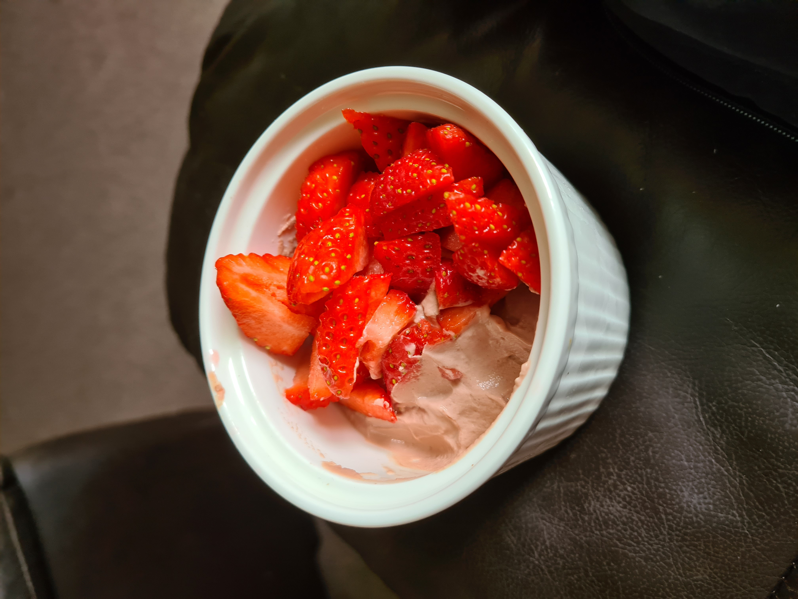

Quark Chocolate Mousse

Description
A description.
Ingredients (2 servings)
- 250g fat-free quark
- 5g cacao powder (or cocoa powder)
- 10g Options Belgian Hot Chocolate Powder
- 1g Vanilla Extract
- 2tsp sweetener
- 2 Fiber One bars
- 50g sliced strawberries
- halo top ice cream
Steps
- Add the quark to a jug, along with the cacao powder, chocolate powder, sweetener and vanilla extract.
- Whisk the ingredients by hand, or with an electric beater, until combined.
- Place Fiber One bars in small containers (eg ramekins or small glasses/bowls).
- Pour the quark mousse mixture on top and put the ramekins in the fridge for a couple of hours.
- Remove from the fridge and serve with chopped strawberries and ice cream.